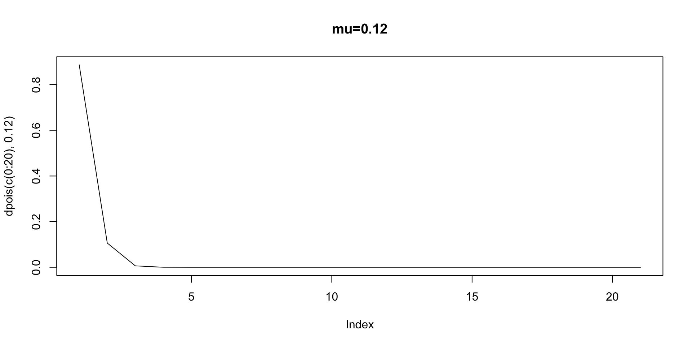
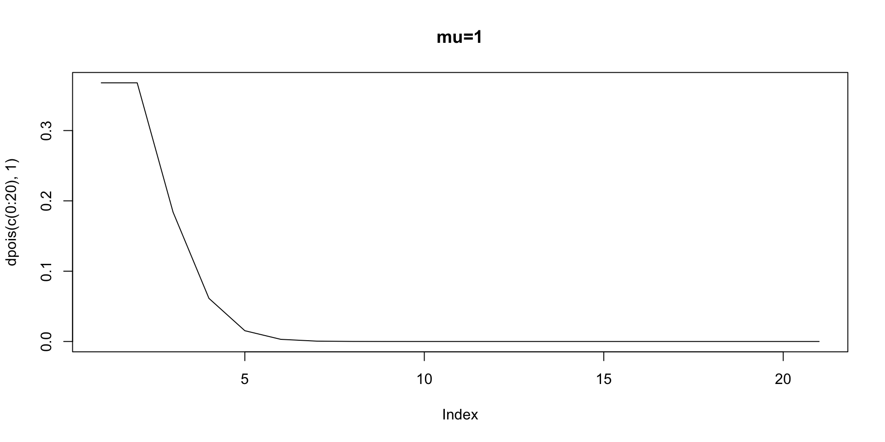
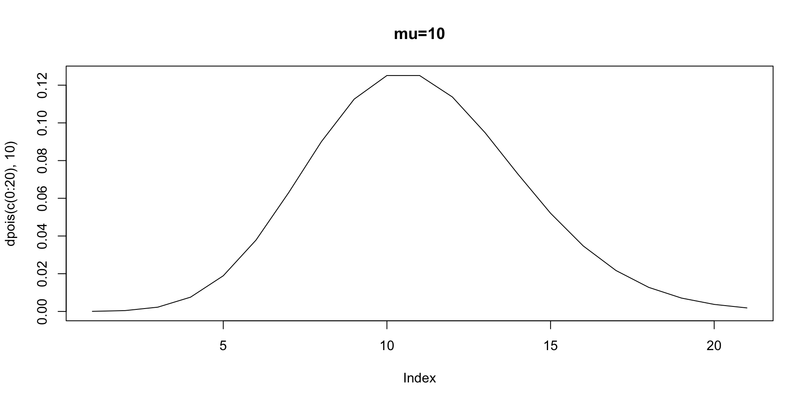
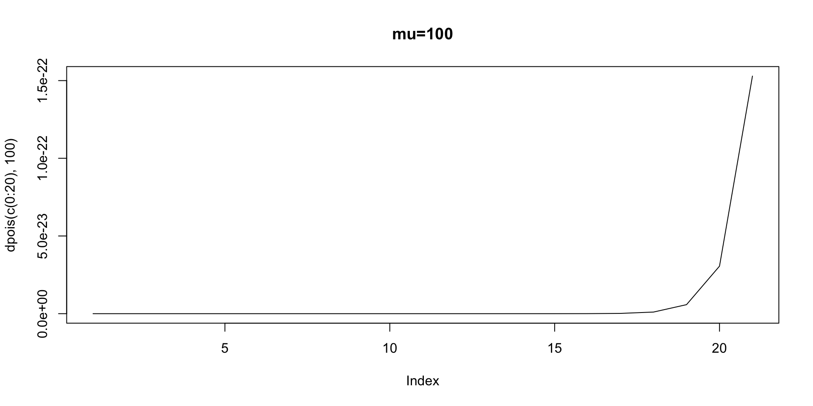

Poisson, Negative Binomial, Zero-Inflation, and Hurdle Models
2026-08-18
This lecture follows Long (1997, Chapters 7-8).
Many variables in the social sciences consist of integer counts.
E.g., number of times a candidate runs for office, frequency of conflict, number of terror attacks, number of war casualties, number of positive statements about a candidate, number of homicides in a city, etc.
Least squares is inappropriate for the reasons we’ve already discussed: \(\textbf{Nonlinearity, nonadditivity and heteroskedasticity}\).
Instead, we need models that are designed to handle count data.
Starting with the most straightforward, let’s consider the Poisson Distribution and by extension, the Poisson Regression Model.
Then, we’ll extend the model to the Negative Binomial Regression Model to account for overdispersion.
The Poisson Distribution is governed by one parameter, \(\mu\), commonly called the “rate parameter.”
The variance of the Poisson Distribution is also governed by \(\mu\).
\[p(y|\mu)={{exp(-\mu)\mu^y}\over{y!}}\]




As \(\mu\) increases, the distribution becomes more symmetric and approaches a normal distribution.
As \(\mu\) increases, the variance increases. A model built from the Poisson Distribution is heteroskedastic.
As \(\mu\) decreases, the distribution becomes more right-skewed.
As \(\mu\) decreases, the variance decreases.
The Poisson Regression Model (PRM) is built from the Poisson Distribution. The model allows us to capture the distribution of integer counts, which are typically right skewed.
The PRM relies on strong assumption: \(E(\mu)=var(y)\). If the data violate this assumption, the variance estimates will be biased, as will test statistics and hypothesis tests.
Overdispersion. Does the Poisson adequately capture the variance in the data?
Zero Inflation. Does the Poisson adequately capture the number of zeros in the data?
Key Extensions: Negative binomial and zero-inflated models.
\[p(y|\mu)={{exp(-\mu)\mu^y}\over{y!}}\]
\[\mu_i=E(y_i|x_i)=exp(\alpha+\beta x_i)\]
\(\alpha+\beta x_i\) must be positive; the rate parameter must be positive, hence \(exp()\)
Non-linear regression model with heteroskedasticity (Long 1997, p. 223), \(\mu_i=exp(\alpha+\beta x_i)\)
Note that by extension, the variance is also influenced by covariate(s), \(x_i\).
Assume \(\alpha=-0.25\), and \(\beta=0.13\) as Long does (p. 221). We may calculate the expected values of \(y\) for a number of \(x\) values, then
When \(x=1\), then the expected number of counts – the rate parameter – is 0.89 (exp(-0.25 + 0.13* 1))
When \(x=10\) then the expected number of counts is 2.85
\(E(y|x)=exp(\alpha+\beta x_i)=var(y|x)\)
Assume that mu <- exp(-0.25 + 0.13*1)
Then, what is the probability of observing 0, 1, or 2 counts when \(x=1\)?
\[\mu_i=exp(\alpha+\sum_K \beta_k x_{k,i})\]
\[p(y|x)={{exp(-exp(\alpha+\sum_K \beta_k x_{k,i}))exp(\alpha+\sum_K \beta_k x_{k,i})^{y_i}}\over{y_i!}}\] - The Likelihood of the PRM with \(k\) predictors:
\[\prod_{i=1}^{N}p(y_i|\mu_i)=\prod_{i=1}^{N}{{exp(-exp(\alpha+\sum_K \beta_k x_{k,i}))exp(\alpha+\sum_K \beta_k x_{k,i})^{y_i}}\over{y_i!}}\]
The log of the likelihood is then,
\[\log\left(\prod_{i=1}^{N}p(y_i|\mu_i)\right) = \sum_{i=1}^{N}\log\left(\frac{\exp\left(-\exp\left(\alpha + \sum_{k=1}^{K} \beta_k x_{k,i}\right)\right) \left[\exp\left(\alpha + \sum_{k=1}^{K} \beta_k x_{k,i}\right)\right]^{y_i}}{y_i!}\right)\] \[E(y|x)=\mu_i = exp(\alpha+\sum_K \beta_k x_{k,i})\]
The partial derivative of \(E(y|x)\) with respect to \(x_k\)
Using the chain-rule.
\[u=\alpha+\sum_K \beta_k x_{k,i}\]
\[ \frac{\partial y}{\partial x} = \frac{\partial y}{\partial u} \cdot \frac{\partial u}{\partial x} \]
\[ \frac{\partial y}{\partial x} = \frac{\partial y}{\partial u} \cdot \frac{\partial u}{\partial x} \]
\[ {{\partial E(Y|X)}\over{\partial x_k}}={{\partial exp(u)}\over{\partial u}}{{\partial u \beta}\over{\partial x_k}}\]
\[ exp(\alpha+\sum_K \beta_k x_{k,i})\beta_k=E(Y|X)\beta_k \]
The effect of \(x_k\) on \(y\) is now a function of the rate parameter and the expected effect of \(x_k\) on that rate parameter
It’s not a constant change in the expected count; instead it’s a function of how \(x_k\) affects the rate as well as how all others relate to the rate!
\[ {{E(y|X, x_k+d_k)}\over{E(y|X, x_k)}}\]
The numerator: \[ E(y|X, x_k+d_k)=exp(\beta_0)exp(\beta_1 x_1)exp(\beta_2 x_2)...exp(\beta_1 x_k)exp(\beta_k d_k) \]
The denominator: \[ E(y|X, x_k)=exp(\beta_0)exp(\beta_1 x_1)exp(\beta_2 x_2)...exp(\beta_1 x_k) \]
We’re left with:
\[ exp(\beta_k d_k) \]
\[ pr(y=m|x)={{exp(-exp(\alpha+\sum_K \beta_k x_{k,i}))exp(\alpha+\sum_K \beta_k x_{k,i})^{m}}\over{m!}} \]
\[ exp(\alpha+\sum_K \beta_k x_{k,i})\beta_k=E(Y|X)\beta_k\]
If \(y \sim Poisson(\mu)\), then \(E(y)=var(y)=\mu\)
\(log(\mu)=\alpha+\sum_K \beta_k x_{k,i}\)
We might encounter either under or overdispersion brought about by unobserved heterogeneity.
It is useful to rely on an alternative model that doesn’t treat \(\mu\) as fixed, but rather it is drawn from a distribution, i.e., \[\mu_i=exp(\alpha+\sum_K \beta_k x_{k,i})\beta_k+\epsilon_i)\]
Scholarly publications of biochemistry graduate students.
From Long (1997), data consist of 915 biochemistry graduate students and the following observations.
The data are in pscl::bioChemists
art: Number of articles published
phd: Prestige of PhD granting institution
fem: Whether the student identifies as “Male” or “Female”
mar: Marital status of the student
kid5: Number of children under age 5.
ment: Number of articles published by the mentor during past 3 years.
We can fit the data using glm(formula, data, family=poisson(link="log"))
Use pois family for post-estimation, along with predict
Follow the same workflow: Estimation \(\rightarrow\) Prediction \(\rightarrow\) (Graphical) Presentation.
\[ y_{articles} = \beta_0 + \beta_1 x_{kid5} + \beta_2 x_{fem} + \beta_3 x_{mar} + \beta_4 x_{phd} + \beta_5 x_{ment} + \epsilon \]
Call:
glm(formula = art ~ kid5 + fem + mar + phd + ment, family = poisson(link = "log"),
data = bioChemists)
Coefficients:
Estimate Std. Error z value Pr(>|z|)
(Intercept) 0.304617 0.102981 2.958 0.0031 **
kid5 -0.184883 0.040127 -4.607 4.08e-06 ***
fem -0.224594 0.054613 -4.112 3.92e-05 ***
mar 0.155243 0.061374 2.529 0.0114 *
phd 0.012823 0.026397 0.486 0.6271
ment 0.025543 0.002006 12.733 < 2e-16 ***
---
Signif. codes: 0 '***' 0.001 '**' 0.01 '*' 0.05 '.' 0.1 ' ' 1
(Dispersion parameter for poisson family taken to be 1)
Null deviance: 1817.4 on 914 degrees of freedom
Residual deviance: 1634.4 on 909 degrees of freedom
AIC: 3314.1
Number of Fisher Scoring iterations: 5\[ y_{articles} = \beta_0 + \beta_1 x_{kid5} + \beta_2 x_{fem} + \beta_3 x_{mar} + \beta_4 x_{phd} + \beta_5 x_{ment} + \epsilon \]
library(tidyverse)
design_matrix <- expand.grid(
intercept = 1,
fem = 1,
mar = 1,
kid5 = 0,
phd = mean(bioChemists$phd),
ment = mean(bioChemists$ment)
)
cat("The expected number of articles published, assuming the above covariate values:\n",
as.matrix(design_matrix) %*% coef(my_model) |> exp() |> as.numeric(),
"\narticles"
)The expected number of articles published, assuming the above covariate values:
1.172184
articleslibrary(tidyverse)
design_matrix <- expand.grid(
intercept = 1,
fem = 0,
mar = 1,
kid5 = 1,
phd = mean(bioChemists$phd),
ment = mean(bioChemists$ment)
)
cat("The expected number of articles published, assuming the abovecovariate values:\n",
as.matrix(design_matrix) %*% coef(my_model) |> exp() |> as.numeric(),
"\narticles"
)The expected number of articles published, assuming the abovecovariate values:
1.647064
articleslibrary(dplyr)
library(tidyverse)
design_matrix <- expand.grid(
intercept = 1,
fem = 0,
mar = 1,
kid5 = 2,
phd = mean(bioChemists$phd),
ment = mean(bioChemists$ment)
)
parameter_draws = MASS::mvrnorm(1000, mu = coef(my_model), Sigma = vcov(my_model))
sampled_values = as.matrix(design_matrix) %*% t(parameter_draws) |> exp() |> t() |> as.tibble()
sampled_values |>
summarize(
mean = mean(V1),
lower = quantile(V1, 0.025),
upper = quantile(V1, 0.975)
)# A tibble: 1 × 3
mean lower upper
<dbl> <dbl> <dbl>
1 1.93 1.57 2.34And varying multiple variables simultaneously, predicting what happens in different combinations of covariate values.
Note that the code is identical, the exception being bind_cols. This is just to label the prediction groups in the final output.
library(tidyverse)
design_matrix <- expand.grid(
intercept = 1,
fem = c(0,1),
mar = c(0,1),
kid5 = c(0,1,2),
phd = mean(bioChemists$phd),
ment = mean(bioChemists$ment)
)
parameter_draws = MASS::mvrnorm(1000, mu = coef(my_model), Sigma = vcov(my_model))
sampled_values = as.matrix(design_matrix) %*% t(parameter_draws) |> exp() |> as_tibble()
sampled_values_with_groups <- bind_cols(
design_matrix |> select(fem, mar, kid5),
sampled_values
)
sampled_values_with_groups |>
pivot_longer(cols = starts_with("V"), names_to = "draw", values_to = "predicted") |>
group_by(fem, mar, kid5) |>
summarize(
mean = mean(predicted),
lower = quantile(predicted, 0.025),
upper = quantile(predicted, 0.975),
.groups = "drop"
)# A tibble: 12 × 6
fem mar kid5 mean lower upper
<dbl> <dbl> <dbl> <dbl> <dbl> <dbl>
1 0 0 0 1.77 1.58 1.98
2 0 0 1 2.06 1.87 2.26
3 0 0 2 2.41 2.02 2.86
4 0 1 0 1.41 1.27 1.56
5 0 1 1 1.65 1.49 1.82
6 0 1 2 1.92 1.59 2.34
7 1 0 0 1.47 1.29 1.68
8 1 0 1 1.71 1.59 1.85
9 1 0 2 2.00 1.72 2.33
10 1 1 0 1.18 1.03 1.34
11 1 1 1 1.37 1.23 1.52
12 1 1 2 1.60 1.34 1.90Use the Poisson CDF in R to generate predicted probabilities of counts.
We can use the same code, just change exp() to ppois()
The NBRM stems from the negative binomial distribution
Recall the binomial density is the PDF stemming from \(k\) independent bernoulli trials. The \(\theta\) parameter will govern its shape.
We can modify the logic (and code) slightly to generate a probability of observing \(r\) successes, given \(n\) trials.
library(tidyverse)
design_matrix <- expand.grid(
intercept = 1,
fem = c(0,1),
mar = c(0,1),
kid5 = c(0,1,2),
phd = mean(bioChemists$phd),
ment = mean(bioChemists$ment)
)
parameter_draws = MASS::mvrnorm(1000, mu = coef(my_model), Sigma = vcov(my_model))
sampled_values = as.matrix(design_matrix) %*% t(parameter_draws) |> exp() |> ppois(2) |> as_tibble()
sampled_values_groups <- bind_cols(
design_matrix |> select(fem, mar, kid5),
sampled_values
)
sampled_values_groups |>
pivot_longer(cols = starts_with("V"), names_to = "draw", values_to = "predicted") |>
group_by(fem, mar, kid5) |>
summarize(
mean = mean(predicted),
lower = quantile(predicted, 0.025),
upper = quantile(predicted, 0.975),
.groups = "drop"
)# A tibble: 12 × 6
fem mar kid5 mean lower upper
<dbl> <dbl> <dbl> <dbl> <dbl> <dbl>
1 0 0 0 0.411 0.406 0.406
2 0 0 1 0.605 0.406 0.677
3 0 0 2 0.670 0.406 0.677
4 0 1 0 0.406 0.406 0.406
5 0 1 1 0.406 0.406 0.406
6 0 1 2 0.493 0.406 0.677
7 1 0 0 0.406 0.406 0.406
8 1 0 1 0.406 0.406 0.406
9 1 0 2 0.542 0.406 0.677
10 1 1 0 0.404 0.406 0.406
11 1 1 1 0.406 0.406 0.406
12 1 1 2 0.407 0.406 0.406In negative binomial regression, count data are modeled with overdispersion:
Mean: \(\mu = \exp(X\beta)\)
Variance: \(\mu + \frac{\mu^2}{\theta}\) (larger than Poisson’s \(\mu\))
glm(formula, data = data, family = quasipoisson(link = "log"))
Call:
glm(formula = art ~ kid5 + fem + mar + phd + ment, family = quasipoisson(link = "log"),
data = bioChemists)
Coefficients:
Estimate Std. Error t value Pr(>|t|)
(Intercept) 0.304617 0.139273 2.187 0.028983 *
kid5 -0.184883 0.054268 -3.407 0.000686 ***
fem -0.224594 0.073860 -3.041 0.002427 **
mar 0.155243 0.083003 1.870 0.061759 .
phd 0.012823 0.035700 0.359 0.719544
ment 0.025543 0.002713 9.415 < 2e-16 ***
---
Signif. codes: 0 '***' 0.001 '**' 0.01 '*' 0.05 '.' 0.1 ' ' 1
(Dispersion parameter for quasipoisson family taken to be 1.829006)
Null deviance: 1817.4 on 914 degrees of freedom
Residual deviance: 1634.4 on 909 degrees of freedom
AIC: NA
Number of Fisher Scoring iterations: 5The Problem: If we have overdispersion (\(E(y) < \text{Var}(y)\)), standard errors will be too small and we will express too much confidence in our results.
The Negative Binomial: \(\text{Var}(Y_i) = \mu_i + \frac{\mu_i^2}{\theta}\) (variance > mean)
\(\theta\) = dispersion parameter
As \(\theta \to \infty\): variance approaches Poisson.
As \(\theta \to 0\): high overdispersion.
\[ \lambda_i \sim \text{Gamma}(\text{shape}=\theta, \text{rate}=\frac{\theta}{\mu_i}) \] - Given this updated rate, then \(Y_i\) just follows the Poisson.
\[Y_i|\lambda_i \sim \text{Poisson}(\lambda_i \cdot e_i)\] \[\mu_i=exp(\alpha+\sum_K \beta_k x_{k,i})\]
The coefficients are the same as the Poisson regression.
The general approach to extract meaningful estimates is also the same.
The only difference is that we use family=quasipoisson(link="log") in glm()
And estimate a \(\theta\) parameter that captures overdispersion.
The standard errors change.
Poisson Regression Model
Call:
glm(formula = art ~ kid5 + fem + mar + phd + ment, family = poisson(link = "log"),
data = bioChemists)
Coefficients:
Estimate Std. Error z value Pr(>|z|)
(Intercept) 0.304617 0.102981 2.958 0.0031 **
kid5 -0.184883 0.040127 -4.607 4.08e-06 ***
fem -0.224594 0.054613 -4.112 3.92e-05 ***
mar 0.155243 0.061374 2.529 0.0114 *
phd 0.012823 0.026397 0.486 0.6271
ment 0.025543 0.002006 12.733 < 2e-16 ***
---
Signif. codes: 0 '***' 0.001 '**' 0.01 '*' 0.05 '.' 0.1 ' ' 1
(Dispersion parameter for poisson family taken to be 1)
Null deviance: 1817.4 on 914 degrees of freedom
Residual deviance: 1634.4 on 909 degrees of freedom
AIC: 3314.1
Number of Fisher Scoring iterations: 5Negative Binomial Regression Model
Call:
glm(formula = art ~ kid5 + fem + mar + phd + ment, family = quasipoisson(link = "log"),
data = bioChemists)
Coefficients:
Estimate Std. Error t value Pr(>|t|)
(Intercept) 0.304617 0.139273 2.187 0.028983 *
kid5 -0.184883 0.054268 -3.407 0.000686 ***
fem -0.224594 0.073860 -3.041 0.002427 **
mar 0.155243 0.083003 1.870 0.061759 .
phd 0.012823 0.035700 0.359 0.719544
ment 0.025543 0.002713 9.415 < 2e-16 ***
---
Signif. codes: 0 '***' 0.001 '**' 0.01 '*' 0.05 '.' 0.1 ' ' 1
(Dispersion parameter for quasipoisson family taken to be 1.829006)
Null deviance: 1817.4 on 914 degrees of freedom
Residual deviance: 1634.4 on 909 degrees of freedom
AIC: NA
Number of Fisher Scoring iterations: 5